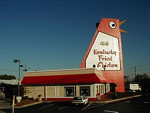

 Durante los años 1950, el Coronel Sanders comenzó a expandir su negocio de pollo frito a través de la franquicia, a la que llamó Kentucky Fried Chicken. El primer restaurante de KFC de este tipo se abrió en 1952 en Salt Lake City (Utah) de manos de Pete Harman, dueño de una hamburguesería en esa ciudad.4 En esos años Sanders aumentó la presencia de su cadena en otros estados a través de demostraciones personales por las ciudades, donde se presentó con un mostacho blanco, perilla y vestido con un traje completamente blanco. Esa imagen fue posteriormente adoptada como logotipo de la compañía. En 1956 Sanders trasladó la sede del negocio a las afueras de Louisville, capital de Kentucky, donde podía conseguir ingredientes y freidoras con más facilidad. Diez años después de la apertura del primer restaurante, KFC alcanzó las 600 franquicias en todo el país y unos beneficios anuales de 300.000 dólares brutos. Al no poder manejar todo el volumen de negocio ni mantener el control sobre todos sus restaurantes, el Coronel Sanders vendió Kentucky Fried Chicken a un grupo inversor local por 2 millones de dólares, más un salario vitalicio de 40.000 dólares al año para hacer apariciones públicas como embajador de la marca. En los primeros años de franquicia de KFC, muchos restaurantes adoptaron su propia imagen. En la foto, el KFC de Marietta (Georgia). Los nuevos propietarios, John Y. Brown Jr y Jack Massey, se hicieron con los derechos de gestión nacional e internacional de la mayoría de las franquicias. Además, Pete Harman también formó parte del grupo inversor. Durante la gestión de Massey y Brown, KFC aumentó su presencia a todos los estados de EEUU, Puerto Rico y algunos países extranjeros como México, Japón, Bahamas, Jamaica y posteriormente Colombia.1 Esto obligó a los dueños a ejercer un mayor control sobre los restaurantes franquiciados, que adquirieron una imagen común basada en los colores rojo y blanco, la imagen del Coronel Sanders y las siglas KFC como marca comercial. Sin embargo, el crecimiento de la franquicia fue demasiado rápido porque no se había logrado una gestión unificada de todos los restaurantes franquiciados. Massey abandonó la compañía por desacuerdos con John Brown, y las acciones de la compañía cayeron desde los 55 dólares hasta los 10 por título en menos de un año. En 1970 el Coronel Sanders y sus herederos renunciaron a su puesto en el consejo de dirección de la empresa, y KFC entró en una crisis que provocó el cierre de varios restaurantes. En 1971 la empresa de bebidas alcohólicas Heublein compró el grupo por 700 millones de dólares, y durante el resto de la década renovó los restaurantes para homogeneizar el método de trabajo de cada uno y reflotar así la imagen del grupo.6 Este periodo coincidió con la muerte por leucemia del Coronel Sanders el 16 de diciembre de 1980.3 En su honor, los propietarios mantuvieron su rostro como identificativo de KFC. Finalmente, el proceso de renovación concluyó en 1980, con la introducción del eslogan We Do Chicken Right (Hacemos el pollo bien) en sus campañas publicitarias que tuvo un notable éxito a la hora de aumentar las ventas de la marca. La franquicia volvió a obtener beneficios un año después. Más tarde, la multinacional tabaquera R. J. Reynolds absorbió Heublein en 1982 y se hizo con el control de todas sus empresas, incluyendo KFC.6 Los nuevos propietarios controlaron el crecimiento de las franquicias de KFC en Estados Unidos e iniciaron una expansión de la marca al extranjero, abriendo sus primeros restaurantes en Europa. En 1983 el grupo contaba con 4.500 locales en EEUU y más de 1.500 en 54 países, siendo la segunda tercera estadounidense con más locales en el exterior, sólo superada por McDonald's y Subway.